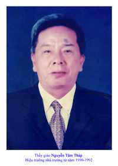
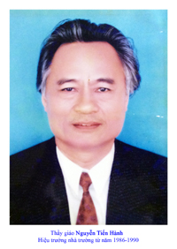
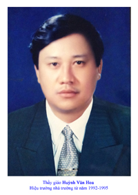
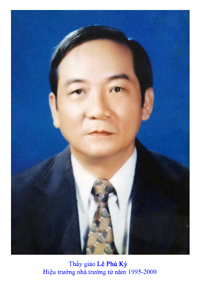
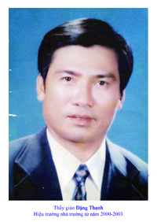
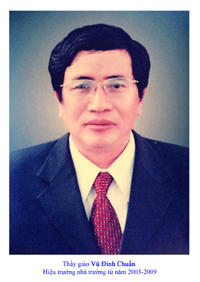
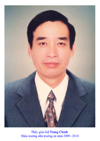
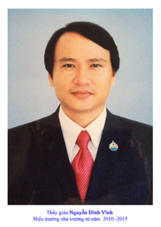

SỨ MỆNH, TẦM NHÌN VÀ GIÁ TRỊ CỐT LÕI
Sứ mệnh:
“Phát hiện, bồi dưỡng nhân tài cho thành phố và đất nước, kiến tạo những giá trị giáo dục ưu việt theo hướng phát huy phẩm chất, năng lực cốt lõi và năng khiếu của từng cá nhân”
Tầm nhìn:
“Xây dựng Trường THPT chuyên Lê Quý Đôn – Đà Nẵng trở thành môi trường giáo dục hiện đại, có chất lượng cao, vươn tầm khu vực và hội nhập quốc tế”Giá trị cốt lõi:
- Yêu nước và nhân ái;- Trung thực và trách nhiệm;
- Năng động và sáng tạo;
- Thể chất và nghệ thuật;
- Tự chủ và hợp tác.
LỊCH SỬ THÀNH LẬP
-15.10.1986: Thành lập trường năng khiếu cấp 2 - 3 Quảng Nam - Đà Nẵng ( tiền thân là Khối chuyên của tỉnh đặt tại Trung Học Phổ Thông Phan Châu Trinh từ 1981 - 1982 và tuyển sinh thêm lớp 8 chuyên Toán ).- 3h3-3h3-1991: Đổi tên là Trường Phổ Thông Trung Học Lê Quý Đôn, nay là trường Trung Học Phổ Thông chuyên Lê Quý Đôn.
- Từ năm học 2003 - 2003h3, Trường được Thành phố đầu tư xây dựng Trường Chất Lượng Cao với tổng kinh phí trên 70 tỷ đồng.
HIỆU TRƯỞNG QUA CÁC KỲ:
  
  
 